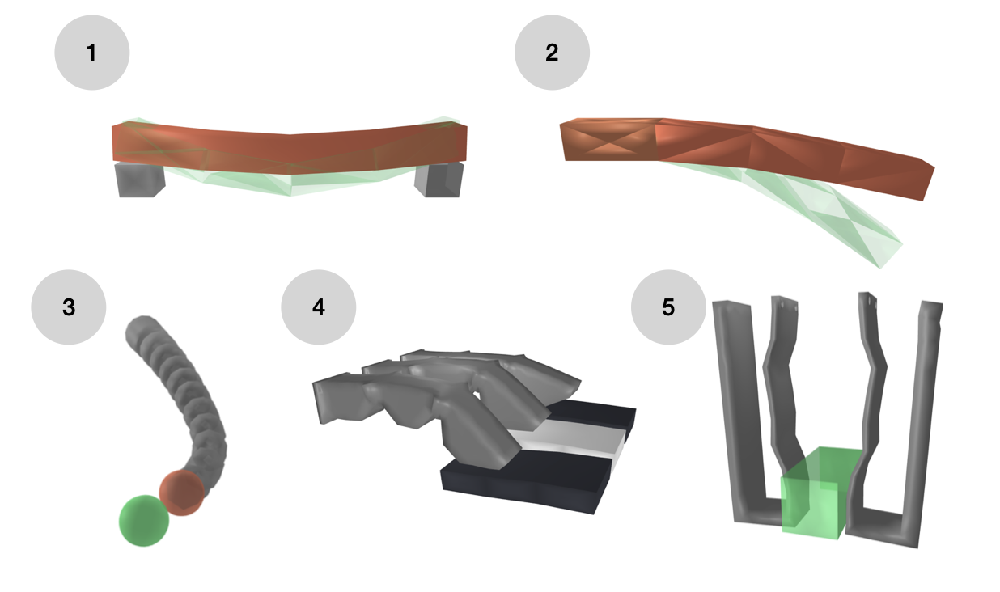

In recent years, soft robotics simulators have
evolved to offer various functionalities, including the simu-
lation of different material types (e.g., elastic, hyper-elastic)
and actuation methods (e.g., pneumatic, cable-driven, servo-
motor). These simulators also provide tools for various tasks,
such as calibration, design, and control. However, efficiently
and accurately computing derivatives within these simulators
remains a challenge, particularly in the presence of physical
contact interactions. Incorporating these derivatives can, for
instance, significantly improve the convergence speed of control
methods like reinforcement learning and trajectory optimiza-
tion, enable gradient-based techniques for design, or facilitate
end-to-end machine-learning approaches for model reduction.
This paper addresses these challenges by introducing a unified
method for computing the derivatives of mechanical equations
within the finite element method framework, including contact
interactions modeled as a nonlinear complementarity problem.
The proposed approach handles both collision and friction
phases, accounts for their nonsmooth dynamics, and leverages
the sparsity introduced by mesh-based models. Its effectiveness
is demonstrated through several examples of controlling and
calibrating soft systems.
